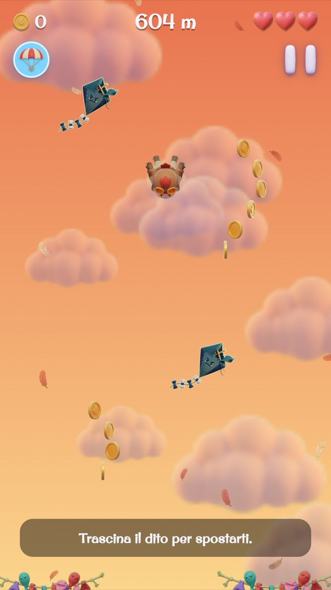
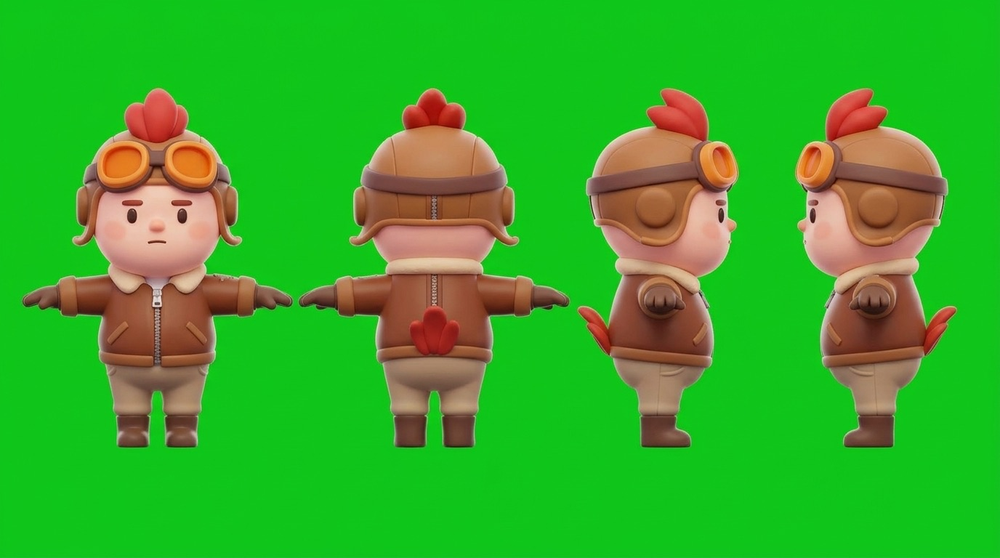
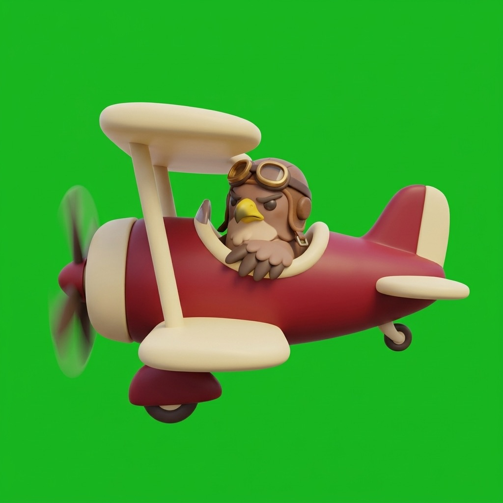
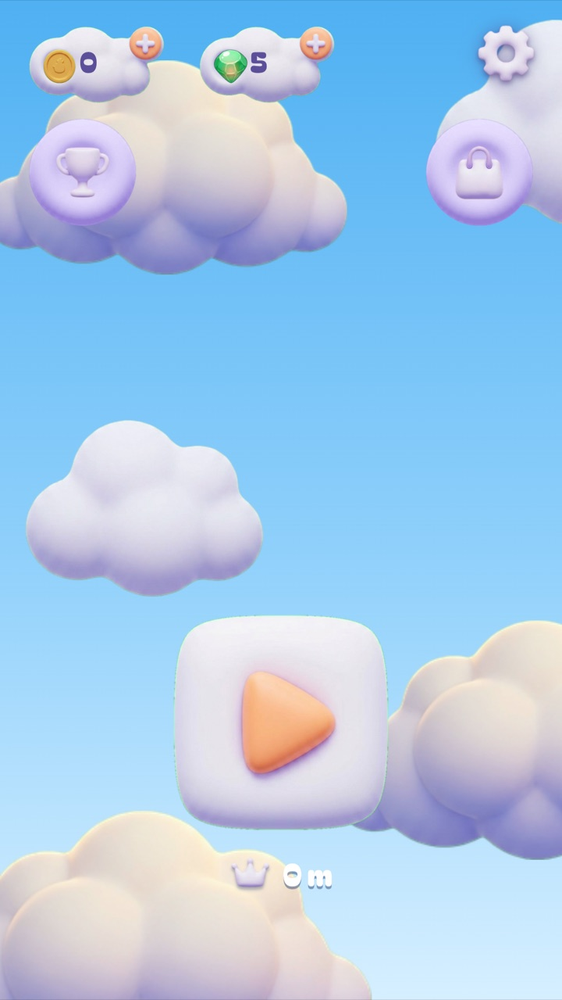
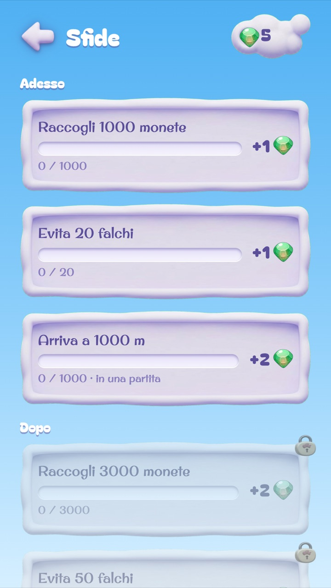

Lavori/Personale
In sviluppo
Chickens don't fly
Un piccolo gioco per telefono, per esplorare come si lavora con l'AI. Grafica, interfaccia e personaggi generati con Gemini, codice scritto da Claude.

Provalo
Il gioco gira qui, dentro il telefono. Trascina per spostarti, spingi in su e tieni premuto per aprire il paracadute.
Con l'audio · pensato per il telefono
Apri a schermo intero ↗L'idea
Chickens don't fly è prima di tutto un'esplorazione: un gioco abbastanza piccolo da finirlo, per capire fin dove si arriva lavorando con l'AI su elementi grafici, interfaccia e character design.
Personaggi, nemici, ostacoli, icone ed elementi dell'interfaccia li genero con Gemini. Il codice lo scrive Claude, seguendo le mie indicazioni. Io decido la direzione, lo stile e cosa tenere, e provo il gioco a ogni passo.
Come si gioca
Un pollo aviatore cade nel vuoto e non sa volare. Bisogna arrivare il più in basso possibile.
- Trascini il dito per schivare ostacoli e animali e raccogliere le monete.
- Spingi in su e tieni premuto per aprire il paracadute e rallentare.
- Con le monete compri potenziamenti; le sfide danno gemme.
- Cadendo attraversi cinque mondi: Cielo, Tramonto, Notte, Caverna e Abisso.




Personaggi
Il protagonista è nato da una serie di prove con Gemini. Scelto il personaggio, ho fatto generare una T-pose da allegare come riferimento a ogni prompt successivo, così pose, animali e oggetti restano nello stesso stile 3D morbido.
Ogni elemento si genera da solo su un fondo verde pieno, poi si ritaglia ed entra nel gioco.




Interfaccia
Il menu l'ho disegnato io in Figma. Da lì Gemini ha generato icone, pulsanti e riquadri; quelli che dovevano allungarsi senza deformarsi li ho fatti ricostruire nel codice, così seguono la misura dello schermo.
Ho provato due stili, cuoio e nuvola: si cambiano dalle impostazioni del gioco. Qui si vede la nuvola.



